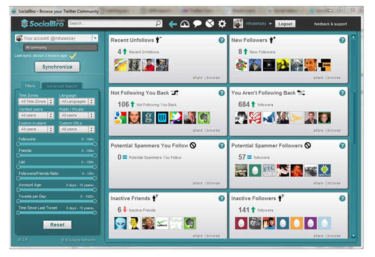

Socialbro

Una herramienta de uso personal que te ayuda a conocer quiénes son tus seguidores:
- Descubre los intereses de tus seguidores, su influencia, localización, idioma y mucho más.
- Averigua cuando es la Mejor Hora para Twittear y obtén el máximo resultado de cada Tweet que publicas.
- Utiliza las herramientas de segmentación para encontrar gente interesante a la que seguir.
- Localiza fácilmente usuarios de Twitter y crea listas con ellos.
Esta herramienta gratuita puede ser utilizada para uso personal por cualquier cuenta de Twitter con menos de
5.000 usuarios (tus seguidores más la gente a la que sigues). Para aprender a utilizarla,
aquí un tutorial